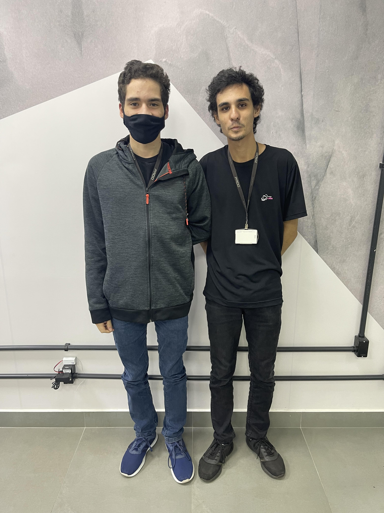

Voltar
Sobre Nós
Em 2020 quando se depararam com a uma quantidade considerável de gatos com dificuldades físicas quanto a locomoção, Nicholas Souza e Matheus Souza iniciaram seu projeto para desenvolver seu primeiro protótipo de cadeira de rodas para gatos
